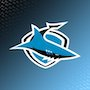
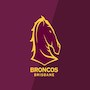
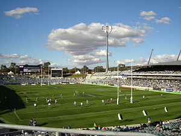
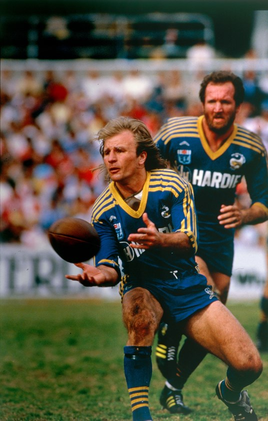
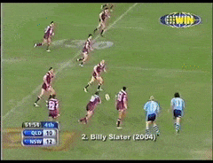

NRL Quiz
%0
1. How many points awarded for a try in Rugby League?
6
3
4
5
2. What player goes by the name JT?
John Tyson
Jack Tyrell
Johnathan Thurston
Jason Torvu
3. Who secured the minor premiership in 2017?



4. What was the stadium "GIO" previously known as?
Gunner
Canberra
Gruman
Carruthers
5. How many players on field at one time per team?
17
12
15
13
6. Who lost the 1989 NSWRL GF?
South Sydney
St. George
Balmain Tigers
Manly-Warringah Sea Eagles
7. What player was tackled head high in goal and awarded a penalty in 1999 GF?
Brett Kimmorley
Craig Smith
Craig Wing
Jamie Ainscough
8. What position did Peter Stirling play in rugby league?
Wing
Centre
Halfback
Prop

9. What year did Darren Lockyer switch from Fullback to Five-Eight?
2009
2006
1999
2004

10. Who won the Clive Churchill medal in 2019?
Cam Smith
Benji Marshall
Jack Wighton
Andrew Fifita